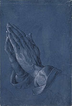

|
|
Albrecht
Dürer and His Legacy: The Graphic Work of a Renaissance Artist Albrecht Dürer (1471–1528) was in a sense the first truly international artist. He was certainly the first who saw how to exploit the new technologies of printing to ensure that his works were known and sought after not just in his own country but across the whole of Europe, making him the great master of the multiple image and an international celebrity. The AD monogram became a trademark recognised and respected worldwide. His drawings and his prints, on which his reputation was built, are at the heart of this exhibition, the first to be devoted to him in Britain in more than 30 years. As a prelude to the Museum’s 250th anniversary year in 2003, the exhibition will celebrate the superlative collection of Dürer prints, drawings and watercolours in The British Museum, many of which were Sir Hans Sloane’s original bequest to the Museum in 1753. In addition, there will be a number of outstanding loans, including the National Gallery’s Saint Jerome, and drawings of prime importance from the Ashmolean Museum, the Royal Collection, the Kupferstichkabinett in Berlin and the Albertina in Vienna. Two superb drawings, the Albertina’s Self-portrait as a thirteen-year old and the world famous Praying Hands, have never before been displayed in this country. The aim of the exhibition is to examine Dürer’s extraordinary achievements as a draughtsman and printmaker during his own lifetime and to look at how the artist’s widely-disseminated and innovative imagery influenced artists and craftsmen for centuries to come. The exhibition begins with an examination of the artist’s revolutionary approaches to self-portraiture and looks at the differing ways that other artists have represented and constructed his image over the centuries. The next sections follow the chronology of Dürer’s life, with an emphasis on a particular period or project in each. They
include his early years in Nuremberg; his first visit to Italy which stimulated
him to produce the earliest-known group of watercolour
landscapes drawn from nature to have survived in the history of western
art; the production of his virtuoso engraving Adam and Eve in 1504 with
its numerous related studies; his work for the Emperor Maximilian including
the massive Triumphal Arch – one of the largest prints ever produced -
and his three enigmatic master prints of 1513-1514, Knight, Death and
the Devil, Melancholia and St Jerome in his Study. The following sections
show the impact of Dürer’s work on other artists,
including Germany, Holland and Italy (Rembrandt among them), and his long-standing
influence on ceramic designs from 16th century maiolica
to 18th century Meissen. A focus on the late
16th and early 17th century phenomenon known as
the ‘Dürer Renaissance’, largely created by
the scarcity of the master’s work, shows how glossy pastiches and elegant
copies of his work became so highly sought after that artists such as
Hans Hoffmann became well-known primarily for their skill at producing
them.
The exhibition concludes with Dürer’s legacy in the 19th century, particularly the way in which his work was interpreted by Romantic artists such as Caspar David Friedrich. Amid the rise of German nationalism, Dürer’s name and art began to achieve a virtually iconic status and a final section looks at how the artist became an object of almost religious veneration in the elaborate festivals celebrating the anniversaries of his birth and death dates of 1828 and 1871. The exhibition is accompanied by the fully-illustrated catalogue Albrecht Dürer and his Legacy (£35.00, British Museum Press, December 2002) by Giulia Bartrum, Joseph Leo Koerner and Ute Kuhlemann, with a text by Nobel Prize winning novelist Günter Grass written in 1971 in commemoration of the 500th anniversary of Dürer’s birth. Press View: Wednesday 4 December, 10.30am - 1.00pm For images or further information please call the Press Office on 020 7323 8583/8525 or email media@thebritishmuseum.ac.uk
|
 Albrecht Dürer
(1471-1528) Albrecht Dürer
(1471-1528)
|
||
|
|
|||